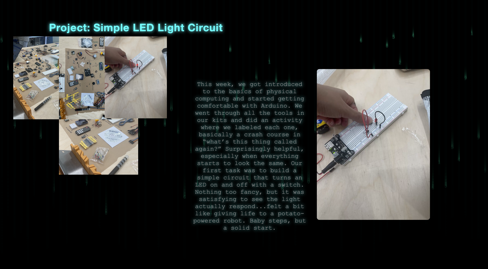

I started adding text and links to
my Week 7 landing page and decided to give it a bit more life
with some animations. I made the links float around the
heading, kind of like they’re orbiting it, giving the page a nice,
dynamic feel instead of everything just sitting still.
After that, I brought in the p5 background I made last week and
added it to the webpage. It tied the whole cyberpunk-tech vibe
together pretty nicely and made the page feel more like a digital
space rather than just another flat layout.

I made a few more p5.js sketches to keep the
aesthetic of my website consistent—still sticking with that glitchy, techy
vibe. One idea I had was to create a current-like visual that connects my
Project 1 and Project 2 links, kind of like a digital thread running through
them. It’s subtle, but it helps everything feel more connected (literally
and visually).
I also started working on the individual project pages, setting up the basic
layout and adding some simple animations to keep things lively without going
overboard. It’s all still a work in progress, but it’s starting to feel more
cohesive—like each section belongs to the same world.